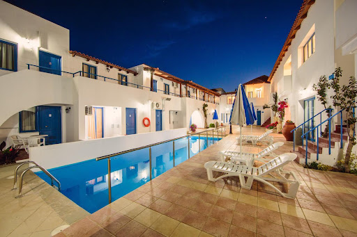
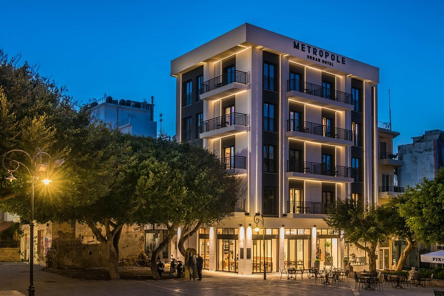
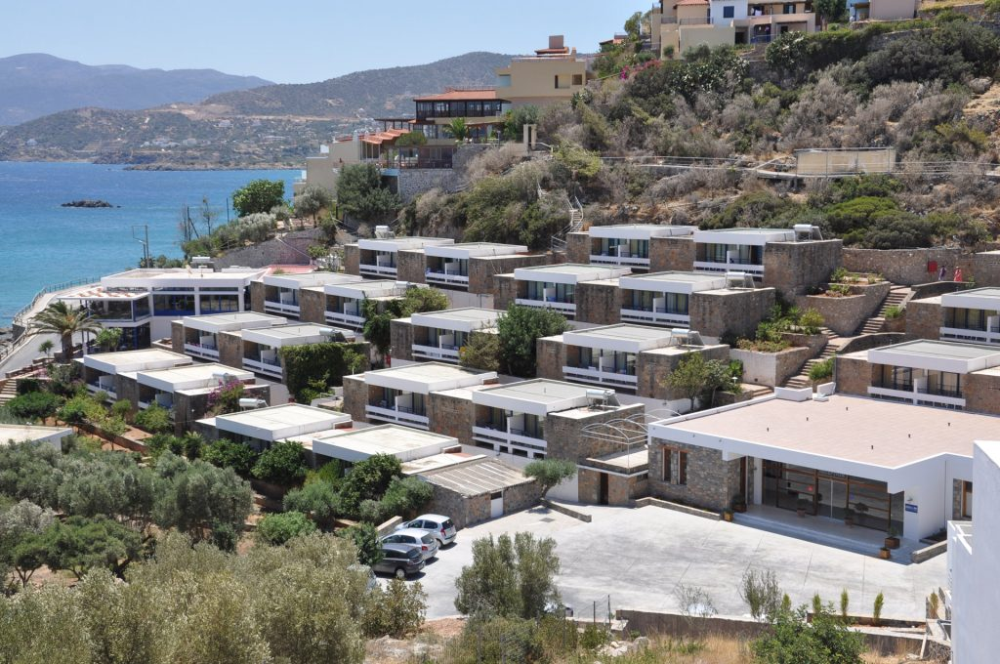
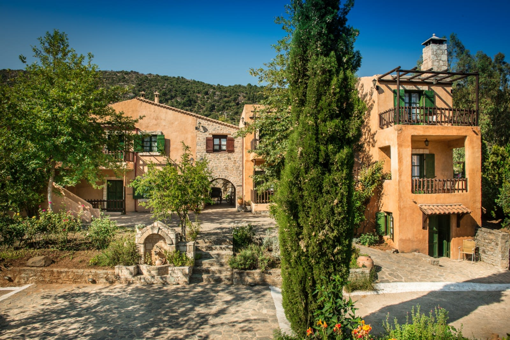
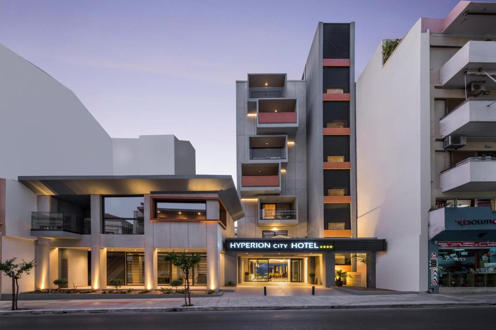
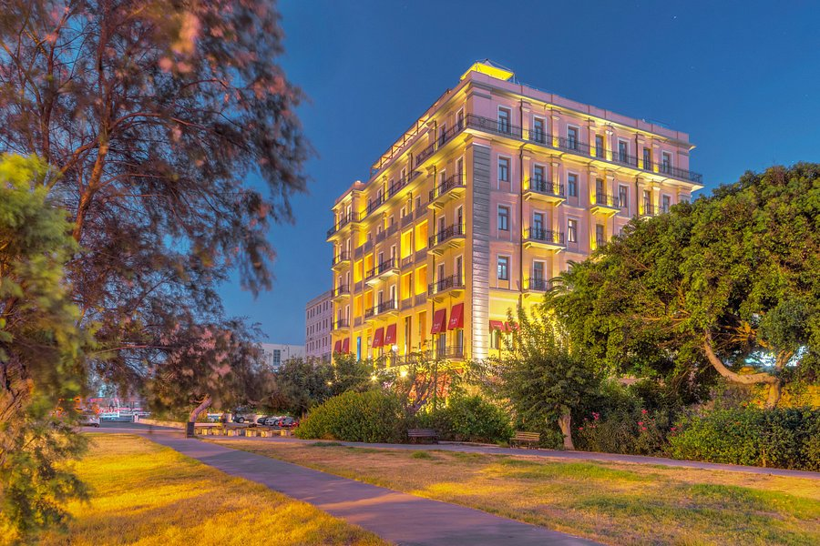
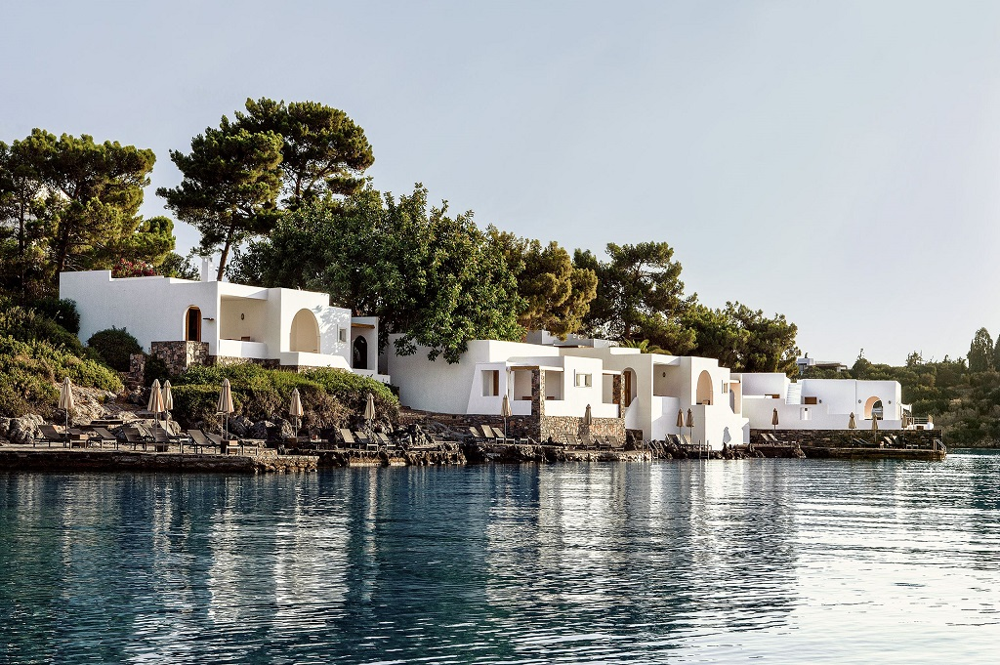

Σημαντικό ρόλο στην πρωτοκαθεδρία που κατέχει η Κρήτη σε αφίξεις τουριστών, καθώς και σε διανυκτερεύσεις, εξυπακούεται πως διαδραματίζει το κομμάτι της διαμονής στο νησί. Η Κρήτη προσφέρει μια ευρεία γκάμα πολυτελών επιλογών σε κάθε έναν από τους 4 νομούς της, όπως ξενοδοχεία πέντε αστέρων, καταπληκτικές βίλες καθώς και μια ποικιλία πολυτελών θερέτρων.
Για την φιλοξενία που σας αξίζει
Iliana Hotel |
Βρίσκεται στο Πάνορμο Ρεθύμνου, ένα μικρό, παραδοσιακό ψαροχώρι στο κέντρο του νησιού. Απέχει 150μ από μια καταπληκτική αμμώδη παραλία και είναι ιδανικό για επισκέπτες που ψάχνουν ξεκούραση, οικογένειακές διακοπές, αλλά και ευκαιρίες να γνωρίσουν τη ζωή στην κρητική ύπαιθρο. | Iliana Hotel
Booking.com |
Kriti Hotel |
Βρίσκεται στην όμορφη πόλη των Χανίων, σε μια ιδιαίτερα προνομιούχα περιοχή, ακριβώς στο σημείο που συναντώνται το κέντρο της πόλης, το παλιό λιμάνι και η θάλασσα. Απέχει μόλις 200 μέτρα από την πλατεία της Δημοτικής Αγοράς, 500 μέτρα από το Βενετσιάνικο λιμάνι και 50 μέτρα από την παραλία του Κουμ Καπί. | Kriti Hotel
Booking.com |
Metropole Urban Hotel |
Βρίσκεται σε έναν παράδρομο στο κέντρο της πόλης του Ηρακλείου, παράπλευρα στον Μητροπολιτικό Ναό του Αγίου Μηνά Ναό Αγίου Μηνά, 10 λεπτά με τα πόδια από το Μουσείο Φυσικής Ιστορίας και 2 χλμ. από το λιμάνι. υπόσχεται στους επισκέπτες να εκπληρώσει όλες τις ανάγκες τους για άνεση και χαλάρωση σε ένα κλίμα αυθεντικής κρητικής φιλοξενίας. | Metropole Urban Hotel
Booking.com |
Ariadne Beach Hotel |
Βρίσκεται λίγο έξω απο τον Άγιο Νικόλαο, σε μια τεράστια έκταση στην πλαγιά ενός λόφου με θέα στον Κόλπο Μιραμπέλου και απέχει ένα λεπτό με τα πόδια από τη βραχώδη παραλία του Γαργαδόρου, 3 χλμ. από το Αρχαιολογικό Μουσείο Αγίου Νικολάου. Η θέα προς στη θάλασσα κόβει την ανάσα, ενώ η γαλήνια ατμόσφαιρα εγγυάται μια εμπειρία που θα μείνει αξέχαστη. | Ariadne Beach Hotel
Booking.com |
Enagron Ecotourism Village |
Βρίσκεται 4 χλμ. από το Σπήλαιο Σφεντόνη και 15 χλμ. από τη Μονή Βοσάκου. Αυτό το ήσυχο οικοτουριστικό θέρετρο είναι ένας ιδιαίτερος ξενοδοχειακός χώρος στον οποίον μπορείτε σε ένα φιλόξενο και παραδοσιακό Κρητικό περιβάλλον να έχετε υψηλών προδιαγραφών διαμονή,σας δίνετε η δυνατότητα μιας πιο οικοτουριστικής γνωριμίας με την Κρήτη. | Enagron Ecotourism Village
Booking.com |
Hyperion City Hotel |
Βρίσκεται στην πόλη των Χανίων, σε απόσταση 100μ. από την παραλία Κουμ Καπί. Σε ένα πανέμορφο περιβάλλον επηρεασμένο από τα τέσσερα στοιχεία της φύσης, και με ένα φιλικό και ζεστό προσωπικό, θα απολαύσετε μια άνετη και ευχάριστη εμπειρία πολυτελούς διαμονής. | Hyperion City Hotel
Booking.com |
GDM Megaron Hotel |
Βρίσκεται στην καρδιά του Ηρακλείου, με θέα το λιμάνι και σε απόσταση αναπνοής από τα κύρια σημεία αναφοράς της πόλης. Χτίστηκε το 1925 και έχει χαρακτηριστεί ως ιστορικό, διατηρητέο μνημείο. Η νεοκλασική εξωτερική του όψη, η minimal εσωτερική του διακόσμηση, η ζεστή ατμόσφαιρα και η προνομιακή εξυπηρέτηση των φιλοξενούμενων, εξασφαλίζουν μια υψηλή ποιότητα υπηρεσιών που θα ικανοποιήσουν και τον πιο απαιτητικό επισκέπτη. | GDM Megaron Hotel
Booking.com |
Minos Beach Art Hotel |
Βρίσκεται σε μια εκπληκτική τοποθεσία δίπλα στο κύμα και διαθέτει γκαλερί τέχνης. Απέχοντας μόλις 800 μέτρα απο το κέντρο της πόλης, προσφέρει όλες τις προδιαγραφές καταλύματος υψηλής ποιότητας, από την αυθεντική και θερμή φιλοξενία του αφοσιωμένου προσωπικού του μέχρι το παραδοσιακό αρχιτεκτονικό ύφος του και το μινιμαλιστικό boho-chic εσωτερικό του. | Minos Beach Art Hotel
Booking.com |